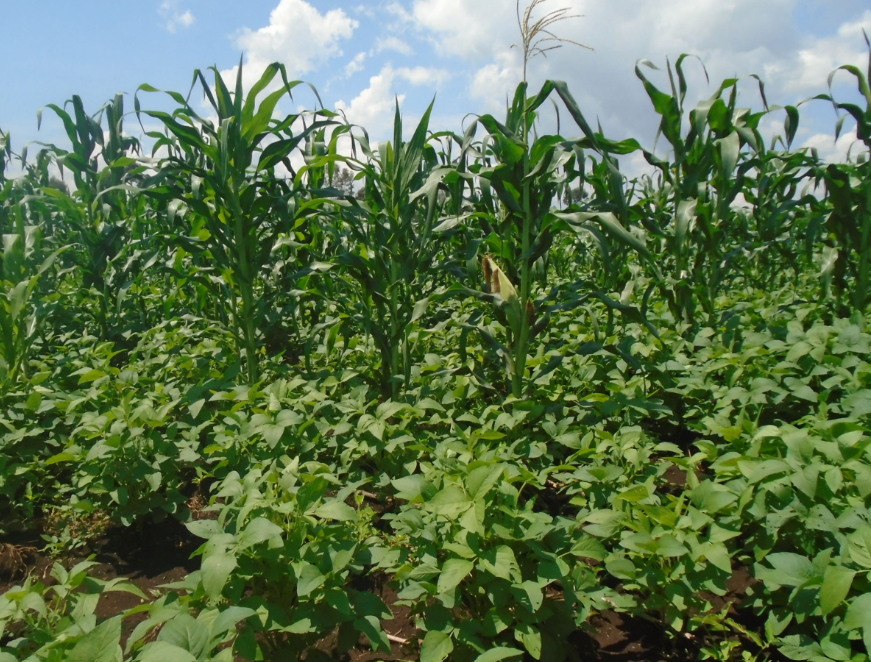
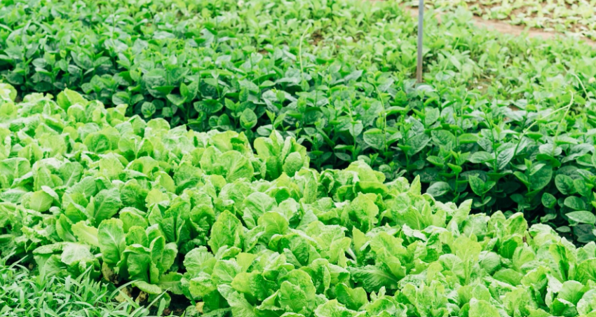
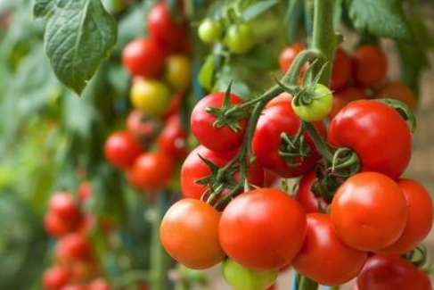
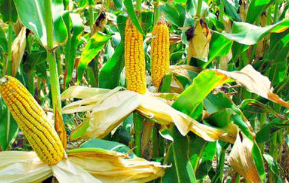
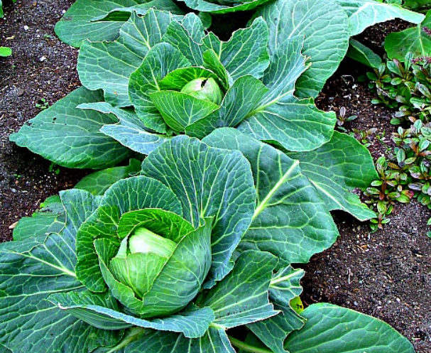
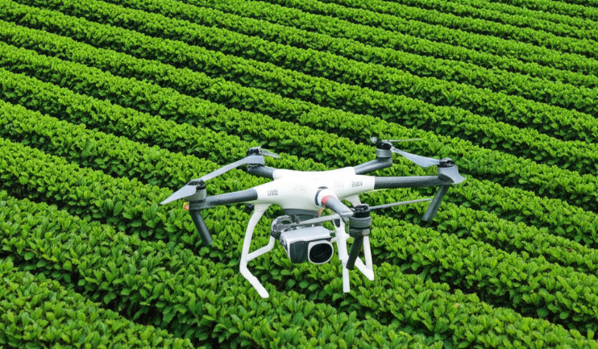

Mbarara City Youth-Led Demonstration Farm, situated in Mbarara City, Uganda, empowers youth through hands-on agricultural training, seasonal employment, and practical experience in sustainable farming. The farm serves as a living classroom for climate-smart practices while addressing local food security challenges and fostering economic independence among youth.
The demonstration farm employs environmentally responsible techniques such as organic soil management, crop rotation, and water-efficient irrigation. By modeling these methods, it helps the community understand sustainable agriculture and encourages replication in other regions.
The project provides youth with opportunities to develop practical agricultural skills, generate income through seasonal employment, and participate in inclusive, gender-balanced farm activities. By increasing the availability of fresh, nutritious vegetables in the community, the farm strengthens local food security. Knowledge gained will also be documented and shared in research publications to benefit the wider community.
This project addresses youth unemployment, limited agricultural knowledge, and local food insecurity. Seasonal employment for 5–10 youth per farming cycle equips them with hands-on skills and income. Young women and marginalized youth are actively included, promoting gender equality and social inclusion. The farm establishes a scalable model for sustainable agriculture that strengthens community resilience and economic growth.
Financially, the project supports the applicant and participating youth, enabling reinvestment and future farm expansion. Sustainable practices protect natural resources, minimize environmental impact, and increase the community’s resilience to climate change.






Project Lead: Antony Bwaana
Email: antonybwaana7@gmail.com
Location: Mbarara City, Uganda